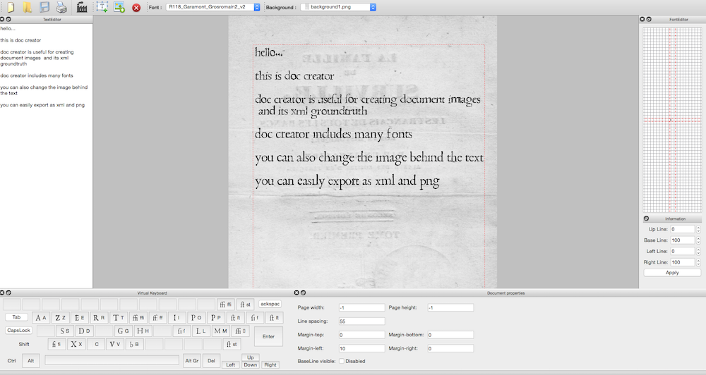
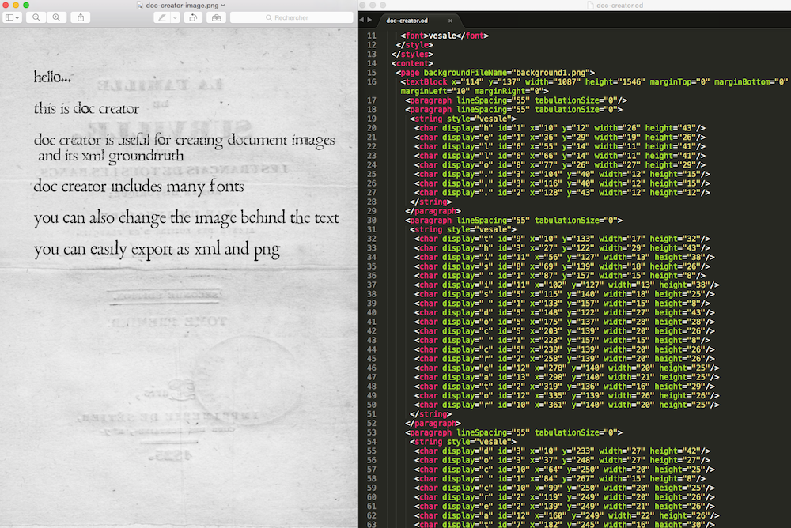
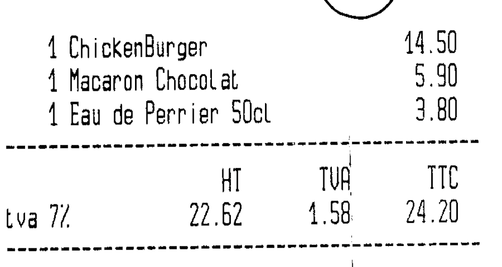
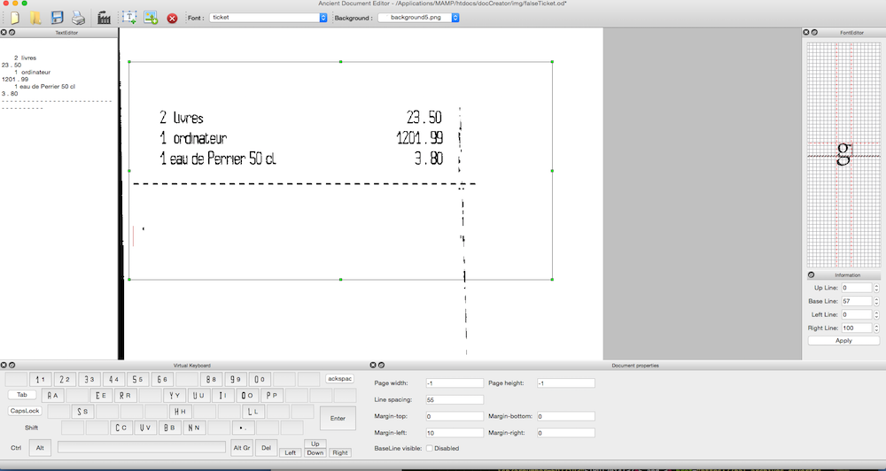
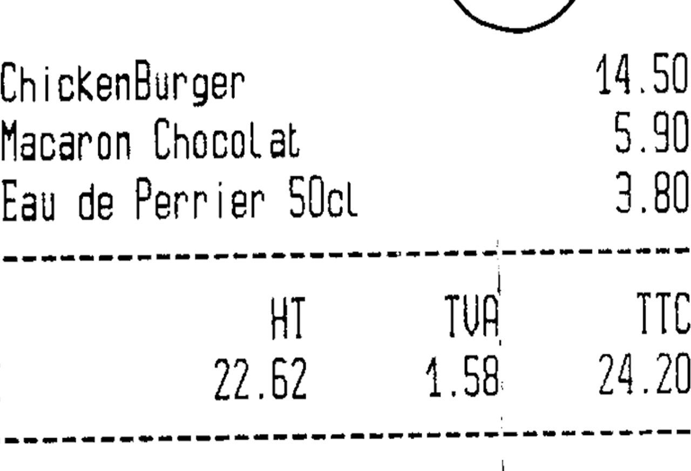
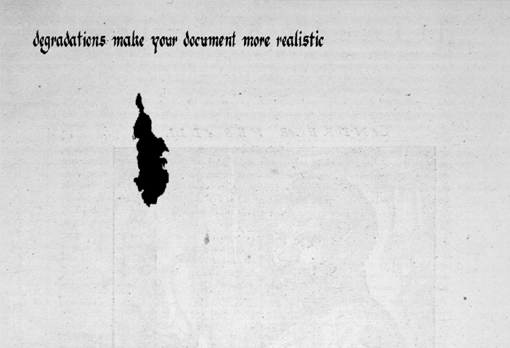
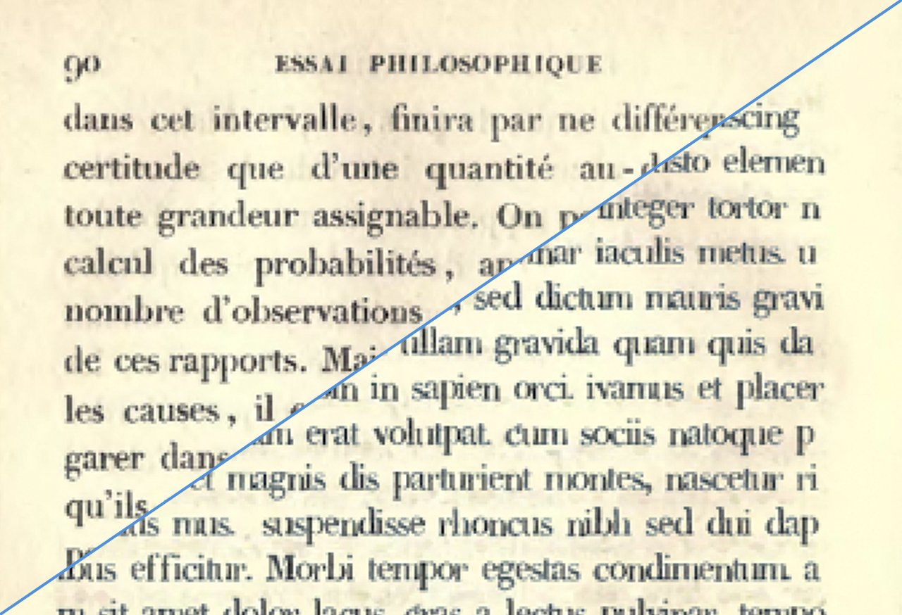

XML groundtruth
Document-creator is able to create a synthetic document using only a text file

Use native document-creator fonts

Export the document as PNG and XML groundtruth

Import new fonts from real document images (image graciously provided by Gestform)

Use this new font to create similar document images

Create in 3 minutes thousands of synthetic document images
TEST ONLINE
Create your own document

1 - Choose a background or import one.
2 - Choose an existing font or create your own with Document Creator.
3 - Write your document, it is easy and fast.
Add some degradations

Once your document is created, you can add various effects of degradation such as ink, blur or even holes and 3D distortion !
Get started

Document Creator Online has many features. Discover some of them here.
Try it now !Download DOCUMENT-CREATOR
Download Document-Creator source code (200 Mo)
If you use our work, please cite [ICDAR2013]
#Ubuntu Linux distribution
#Need OpenCV and QT packages
sudo apt-get install libopencv-dev
sudo apt-get install qtbase5-dev libqt5xmlpatterns5-dev
#Download Document-Creator source code (200 Mo)
unzip DocumentCreator.zip
cd DocumentCreator
mkdir build
cd build
cmake ..
make
#Launch DocumentCreator executable
software/DocumentCreator/DocumentCreator
#MAC distribution (with Homebrew)
#Need OpenCV and QT packages
brew install qt5
brew linkapps qt5
brew link --force qt5
brew tap homebrew/science
brew install opencv
#Download Document-Creator source code (200 Mo)
unzip DocumentCreator.zip
cd DocumentCreator
mkdir build
cd build
cmake ..
make
#Launch DocumentCreator executable
software/DocumentCreator/DocumentCreator
TROUBLESHOOTING
#if you encounter a problem with Qt during the cmake process it might comes from your PATH
export PATH=/Users/XXX/Qt/5.4/clang_64/bin:$PATH
#or (according to your system version)
export PATH=/usr/local/opt/qt5/bin/:$PATH
#if CMake does not find OpenCV, you may try to specify the directory containing OpenCVConfig.cmake
OpenCV_DIR=/Users/XXX/tools/share/OpenCV
cmake ..
#if you encounter a problem during the make process it might be related to your C++11 configuration
#edit CMakeLists.txt.txt, and add (or remove) the following line before the first "ADD_SUBDIRECTORY" line
SET(CMAKE_CXX_FLAGS "${CMAKE_CXX_FLAGS} -std=c++11")
#then restart the construction process
rm -rf CMakeCache.txt CMakeFiles
cmake ..
make
cd ../documentcreator-build/software/AncientDocumentEditor/
./AncientDocumentEditor